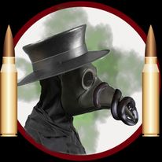

! Pistolul-mitralieră (PM) este o carabină automată cu o greutate mică , destinat să folosească cartușe de pistol pentru a executa foc automat la distanță relativ scurtă (cel mult 150m). Acest tip de armă combină focul automat al unei mitraliere cu cartușele mai mici și mai ușoare folosite la pistoale . Pistoalele-mitralieră se bucură de o largă apreciere în unitățile antiteroriste , care de regulă se luptă cu adversari neprotejați de veste antiglonț în spații înguste, reculul mai mic , controlul mai bun al armei și în mod automat minimalizarea riscului de penetrare completă (și prin aceasta punerea vieții civililior în pericol) oferind un beneficiu maxim . !
În cele ce urmează voi realiza o listă de SMG-uri :
SMG : Uzi
Producător : Uziel "Uzi" Gal , Israel Military Industries , FN Herstal , etc.
Origine : Israel
Muniție : 9mm
Uzi este o familie de SMG-uri israeliene . Uzi a fost una dintre primele arme care a utilizat un design bolț telescopic , care permite încărcătorului să fie adăpostite în prinderea armei pentru o face mai scurtă.
Primul SMG Uzi a fost proiectată de maiorul Uziel "Uzi" Gal la sfârșitul anilor 1940 , la scurt timp după înființarea statului Israel . Prototipul a fost terminat în 1950 . A fost introdus pentru prima dată în Forțele speciale ale Forțelor de Apărare ale Israelului (IDF) în 1954 . IDF a furnizat Uzis trupelor , ofițerilor , trupelor de artilerie și soldaților din tancuri , precum și forțele de asalt de elită ale infanteriei ușoare.
Uzi a fost exportat în peste 90 de țări . De-a lungul duratei sale de viață , a fost fabricat de Israel Military Industries , FN Herstal și alți producători . Din 1960 până în 1980 , mai multe mitraliere Uzi au fost vândute în mai multe țări , pentru aplicarea legii de către polițiști și pentru a oferi pază de către firme de pază private , decât orice altă mitralieră făcut vreodată.
Acestă armă , datorită producerii în masă și a calităților armei , a juns să fie preferată și de către membri gangurilor (alături de MAC-10) , acestea fiind des folosite în atacurile de tip "drive-by" .
Preț actual : $3.000

SMG : FN P90
Producător : FN Herstal
Origine : Belgia
Muniție : FN 5.7×28mm
FN P90 , cunoscut și sub numele de FN Project 1990 PDWS , este un SMG compactă proiectat și fabricat de FN Herstal în Belgia . Arma a fost creat ca răspuns la solicitările NATO de înlocuire a armelor de foc Parabellum de 9×19mm . P90 a fost conceput ca o armă de foc compactă , dar puternică pentru echipajele de urmărire din vehicule , personalul de sprijin , forțele speciale și grupurile antiteroriste . Acesta este adesea menționată ca o armă compactă de apărare personală .
Proiectată în combinație cu pistolul FN Five-seven și muniția FN 5.7×28mm , dezvoltarea armei a început în 1986 , iar producția a început în 1990 (din acesta an provenind "90"-ul din numele armei) . După ce muniția de 5,7×28mm a fost reproiectată și scurtată , o versiune modificată a P90-ului cu un încărcător adaptat pentru a folosi noua muniție a fost introdus în 1993 , iar pistolul Five-seven a fost introdus ulterior ca o armă secundară folosind aceeași muniție de 5,7×28mm .
Dispunând de un design compact bullpup cu o țintă reflex integrată și controale complet ambidextru , P90-uș este o armă neconvențională , cu un aspect futurist . Designul său include mai multe inovații , cum ar fi un încărcător unic de top și muniția FN de calibru mic , de mare viteză de tip 5,7×28mm . Caracteristicile integrate suplimentare includ laserul vizibil sau infraroșu interschimbabil și o sursa de lumină .
P90-ul este folosit de către forțele militare și de poliție din peste 40 de națiuni , cum ar fi Austria , Brazilia , Canada , Franța , Grecia , India , Malaezia , Polonia și Statele Unite .
Pe baza acestei arme , s-a mai inventat și versiunea strict semiautomată pentru civili numită PS90 .
Preț actual : $2.000-$3.000
SMG : Orița
Producător : căpitanul Marin Orița , Leopold Jašek Nicolae Sterca , Uzinele Metalurgice Copșa Mică și Cugir
Origine : România
Muniție : 9 mm
Orița este un pistol-mitralieră de calibrul 9 mm , ce a fost fabricat în România în timpul celui de-al Doilea Război Mondial și câțiva ani după . Arma a fost numită după căpitanul Marin Orița , care a omologat în România modelul ei . Potrivit unor surse, Orița a fost un proiect ceho-român , la care au contribuit cehul Leopold Jašek și românul Nicolae Sterca .
SMG-ul Orița a fost fabricat în mare serie la Uzinele Metalurgice Copșa Mică și Cugir . Prima versiune , modelul M1941 , a intrat în dotarea armatei române în 1943 . O nouă versiune , îmbunătățită , este modelul M1948 , cu pat fix de lemn sau M1949 cu pat rabatabil din metal . Arma s-a dovedit deosebit de fiabilă pe fronturile celui de-al Doilea Război Mondial și a rămas astfel în dotarea armatei române , până ce a fost înlocuită cu versiunea românească a automatului AK-47 .
Orița a fost în serviciul Gărzilor patriotice până în anii 1970 .
(Orița Carabină - O versiune a fost proiectată , folosind muniția de tip 9 × 23mm Steyr . Doar un singur prototip a fost construit , acesta fiind păstrat la Muzeul Militar Național din București.)
Preț actual : cel mai probabil se poate achiziționa în cadrul licitațiilor private
.jfif)
SMG : Heckler & Koch MP5
Producător : Compania Heckler & Koch
Origine : Oberndorf am Neckar , Germania
Muniție : 9mm
Heckler & Koch MP5-ul , cunoscut ca HK-MP5 , este un pistol-mitralieră de calibrul 9 mm Parabellum . A fost proiectat în anii 1960 de către o echipă de ingineri ai firmei Heckler & Koch GmbH din Oberndorf am Neckar . În prezent există peste 100 de variante , inclusiv o variantă semiautomată .
MP5-ul este unul dintre cele mai folosite pistoale-mitralieră din lume , fiind în serviciul a 40 de țări . În anii 1990 , Heckler & Kock a dezvoltat modelul Heckler & Koch UMP, succesorul modelului MP5.
Poate vă întrabți cum s-a născut ideea pentru această armă ?
Răspunsul ar fi că compania Heckler & Koch , încurajată de succesul puștii automate G3 , a proiectat o familiei de arme constând în patru tipuri diferite de arme care aveau la bază configurația și mecanismul intern al puștii G3 . Primul tip de armă folosea cartușul 7,62×51mm NATO , al doilea utiliza cartușul 7,62×39mm M43 , al treilea tip de armă folosea cartușul 5,56×45mm NATO , iar ultimul tip de armă utiliza cartușe 9×19mm Parabellum . MP5 făcea parte din ultimul tip de arme , fiind denumită inițial HK54 .
În anul 1964 a început proiectarea armei, aceasta fiind introdusă în dotarea Poliției Federale Germane , grănicerilor și forțelor speciale doi ani mai târziu . MP5 este fabricat sub licență în Grecia, Iran, Mexic, Pakistan, Arabia Saudită, Sudan, Turcia și Marea Britanie .
Preț actual : $1.000-$1.500
.jfif)
.jfif)
SMG : Thompson Submachine Gun
Producător : John T. Thompson
Origine : USA
Muniție : .45 ACP
Pistolul-mitralieră Thompson este un pistol-mitralieră inventat de ofițerul american John T. Thompson în anul 1918 , cu scopul de a intra în uzul armatelor Antantei , în timpul Primului Război Mondial , dar a fost folosită intensiv de armatele Aliaților din Cel De-Al Doilea Război Mondial (deși , se folosea numai de anume soldați deoarece muniția de tip .45 ACP era mai greu de procurat pe liniile de front) .
Pistolul-mitralieră Thompson a fost răspunsul americanilor la SMG-urile și mitralierele franțuzești (Ribeyrolles 1918) , germane (MP 18/28) și rusești (Fiodorov) , apărute în timpul Primului Război Mondial . Însă pistolul-mitralieră Thompson a devenit faimos în timpul perioadei interbelice , odată cu Prohibiția , fiind utilizat atât de armată și poliție , cât și de criminali și gangsteri , fiind apreciat pentru calibrul său mare , pentru acuratețea și fiabilitatea sa dar și pentru încărcătoarele sale largi . Pistolul-mitralieră Thompson a fost, de asemenea , cunoscut de către oameni ca "Tommy Gun" , "Annihilator" , "Chicago Typewriter" , "Chicago Piano" , "Chicago Style" , "Chicago Grinder" , "Trench Broom" , "Chopper" , sau pur și simplu "The Thompson" .
Pentru soldații germani în timpul celui de-al Doilea Război Mondial , această armă însemna pentru cel ce o găsea , o adevărată pradă de război (trofeu) .
Preț actual : $2.500-$3.000
.jfif)
.jfif)
SMG : MAS-38
Producător : Manufacture d'Armes de Saint-Étienne (MAS)
Origine : Franța
Muniție : 9mm / 7.65mm Longue
MAS-38 a fost un pistol-mitralieră francez proiectat înainte de al Doilea Război Mondial și utilizat de forțele franceze și germane . Acesta a fost proiectat de un program de dezvoltare de arme care a avut loc între 1918 și 1922 sub controlul Service Technique de l'Armement.
Un pistol-mitralieră , o mitralieră ușoară și o pușcă semiautomată au fost dezvoltate pentru a înlocui toate armele mici existente . Constrângerile bugetare datorate obiectivelor militare considerate prioritare cum ar fi construirea liniei Maginot a dus la întârzierea adoptării acestor noi arme .
Pistol mitralieră model MAS 38 a fost dezvoltat din pistolul mitralieră experimental MAS-35 , el însuși fiind derivat din STA 1922 și MAS 1924 , în varianta potrivită pentru muniția de 9 mm , cât și pentru cea de tip 7.65mm Longue ; și a fost produs imediat după Primul Război Mondial . Înainte de dezvoltarea acestei arme , Franța a folosit o varietate de mitraliere din Germania și Elveția .
Ministerul de război francez a aprobat producția de MAS-38 în 1938, dar aceasta a început în 1939.
MAS (firma producătoare) , Manufacture d'Armes de Saint-Étienne , a fost un furnizor francez de arme care a fabricat mai multe arme de foc pentru armata franceză , inclusiv MAS-36 , MAS - 49 și FAMAS . În prezent face parte din Nexter . Ministerul de război francez a aprobat producția de MAS-38 în 1938 , dar aceasta a început în 1939 .
Fun fact : Pe 28 aprilie 1945, partizanii italieni l-au ucis pe fostul dictator fascist Benito Mussolini cu un MAS-38.
Preț actual : $6.900 (licitații)
.jfif)